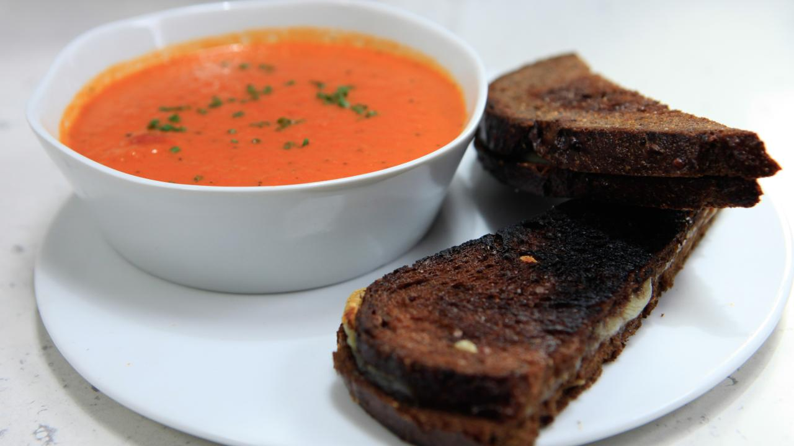

Tomato soup and grilled cheese
Created by Racheal Ray

Ingredients for the soup
- 4 cups, Chicken or vegtable stock broth
- One 28-ounce can concentrated crushed tomatos
- 1 cup heavy cream
- Coarse salt and black pepper
- 20 leaves fresh basil
Ingredients for the sandwich
- 8 slices of pumpernickel bread
- 8 slices of emmentaler cheese
- 1/4 cup heavy cream
- 1/4 cup finely chopped chives, for garnish
Instructions for both
- Preheat a griddle pan over medium heat for the grilled cheese.
- Heat a medium soup pot over medium-high heat. Add the oil and then melt 2 tablespoons of the butter into the oil. Add the garlic, onions, thyme, paprika and some salt and pepper, then partially cover the pot and cook to soften, 10 minutes. Stir in the tomato paste and cook until fragrant, 2 minutes. Deglaze the pan with 2 cups of the chicken stock and transfer to a food processor. Add the tomatoes and process until smooth. Pour the soup back into the pot and add the remaining 2 cups stock. Simmer at a low bubble while you make the grilled cheese.
- Lightly butter one side of each slice of bread. Place 2 slices of cheese between 2 slices of bread, buttered-side facing out. Grill the sandwiches until crispy and the cheese melts.
- Stir the cream into the tomato soup right before serving. Serve in shallow bowls with chives to garnish and grilled cheese for dipping.
Why this is my favorite recipe